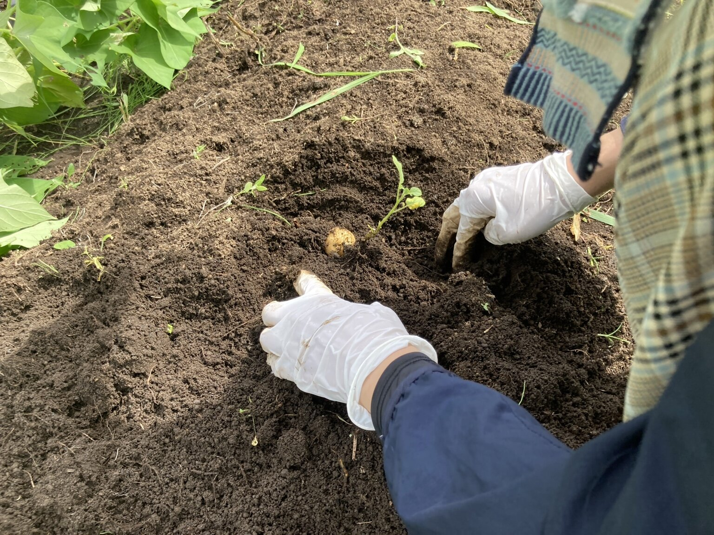
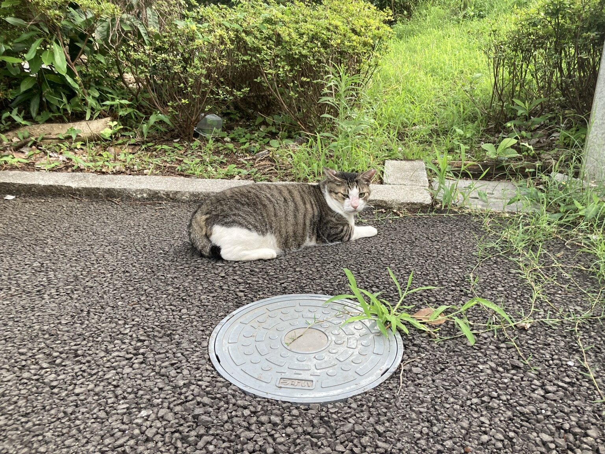

花が咲いたとき、野菜が採れたとき、寄せ植えが完成したとき。「きれいですね」「上手ですね」と声をかけることがあります。
一緒に喜ぶ言葉は、大切にしたいものです。そこにもう少し、その人が選んだことや工夫したことを添えられたら、どのような会話が生まれるでしょうか。
今回は、講義用教材『植物に詳しくないと園芸療法士にはなれないのか』から、園芸の時間に「具体的に言葉で返す」という関わりを紹介します。

出来上がったものと、その人がしてきたこと
目の前の花や作品を見ると、色や形、大きさに目が向きます。その一方で、完成までには、本人の小さな選択や行動が重なっています。
どの花を植えるか迷ったこと。鉢の向きを変えてみたこと。つぼみが開くのを、毎朝気にかけていたこと。
園芸療法では、出来上がったものとともに、その過程にも目を向けたいと思います。植物と関わる中で、その人が何を選び、どのように手を動かしていたか。それを見つけ、言葉にして返すことも、支援する側の大切な役割です。
「どこを見ていたか」が伝わる言葉
ここからの会話は、説明のための例です。
寄せ植えができたとき、「きれいにできましたね」に加えて、こんなふうに伝えてみます。
「この黄色い花を真ん中に選んだんですね。目を引きますね」
ジャガイモ掘りなら、見ていた手の動きに触れることもできます。
「イモの周りから、少しずつ土をよけていましたね」
すると、「傷をつけないようにしたんだよ」と本人が工夫を話してくれるかもしれません。こちらが理由を決める前に、「何か気をつけていたことはありますか」と尋ねることもできます。
大きな褒め言葉を探すより、実際に見たことを伝える。その言葉から、本人が大事にしていたことを聞く時間につなげられたらと思います。

「自分が関わった」という経験を、一緒に振り返る
花が咲いたことや収穫できたことを、自分の経験として振り返るとき、続けてきた世話や選択も、その一部になります。
「この花、植えるときに選んでいましたね」
「つぼみのころから、毎朝見ていましたね」
こうした言葉は、本人がしてきたことを一緒に確かめるためのものです。「自分にもできた」「次はこうしてみたい」という気持ちが生まれることもあるかもしれません。ただし、その感じ方は一人ひとり異なります。こちらの期待する答えを求めず、本人の言葉を待ちたいところです。
前回の記事では、種取りを通して「来年も、この花に会いたい」という思いを考えました。今回の関わりも、その人が植物と過ごした時間に目を向けるという点で、つながっています。
事実を大切に、気持ちは本人に確かめる
具体的に返すときにも、気をつけたいことがあります。
植物の成長には、天候や土の状態、ほかの人の世話など、いろいろな条件が関わります。本人の関わりを大切にするあまり、「全部あなたのおかげで咲いた」と、事実以上に話を大きくする必要はありません。
また、笑顔が見られたからといって「達成感があった」とすぐに決めることも避けたいと思います。「やってみて、どうでしたか」と尋ね、話したくないときには無理に言葉を求めないことも大切です。
言葉だけでなく、本人が作品を眺める時間や、静かに過ごす時間も残しておきたいですね。

次の園芸の時間に、一つだけ
次に誰かと園芸をするとき、その人が選んだことや工夫したことを、一つ見つけてみてください。
「この色を選んだんですね」
「ここを、何度か確かめていましたね」
その短い言葉が、「私はこうしたかったんだよ」という思いを聞く入口になるかもしれません。
植物の変化を見つめるように、その人が関わってきた時間にも目を向ける。そんな声かけを、大切にしていきたいと思います。
本記事は、筆者の講義用教材をもとに実践上の考え方を紹介したものです。会話例は特定の方の発言や、掲載写真の場面で交わされた会話を記録したものではありません。